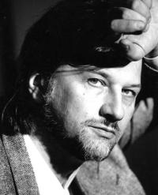

Алексей Рыбников, композитор
Алексей Львович Рыбников - выдающийся советский и российский
композитор. Творчество композитора Алексея Рыбникова поистине
многогранно: от произведений для симфонического оркестра до рок-опер
«Юнона и Авось», «Звезда и смерть Хоакина Мурьеты», мистерии «Литургия
оглашенных» и саундтреков к более сотни кино- и телефильмов,
определивших музыкальные вкусы нескольких поколений зрителей («Остров
сокровищ», «Большое космическое путешествие», «Приключения Буратино»,
«Про Красную Шапочку. Продолжение старой сказки», «Вам и не снилось...»,
«Тот самый Мюнхгаузен», «Заяц над бездной», «Андерсен. Жизнь без любви»
и др.). На сегодняшний день Алексей Рыбников – художественный
руководитель успешного и популярного театра-мастерской, представляющего
ряд музыкальных постановок на лучших российских и зарубежных площадках. "Человек с детства спрашивает себя, почему люди умирают. Когда маленький ребёнок познаёт мир, первый его осмысленный вопрос – о цели жизни, о смерти, о любви. Любовь – это безусловно, жизнь. Хотя, если смотреть с религиозной точки зрения, любовь выше и того, и другого. Невозможно понять этот мир, если не принять что-то выше материального существования. Но нужно обязательно пройти свой духовный путь, а не опираться на чужой опыт. Семья была верующей, но (для меня) в подростковом возрасте это отошло в сторону. Вновь к вере я пришёл после 30 лет. Первым шагом осмысления стало произведение «Юнона и Авось», потом «Литургия оглашенных», где я затронул религиозные вопросы. Музыка с детства была для меня абсолютом. Я занимался на рояле, только в этом видел своё будущее. Но потом понял, что есть более высокие вещи и решил пойти по пути сочетания музыки с поэзией и драматургией. В 10 лет я начал учиться у Арама Хачатуряна и написал балет «Кот в сапогах».
БиографияНа долю предков Алексея Рыбникова выпало немало тяжелых испытаний. Его матери было пять лет, когда ее вывели на расстрел. Ее дед был генералом царской армии по медицинской линии, все ближайшие родственники также были царскими офицерами. Одни погибли в первую мировую войну, другие при защите Зимнего дворца... "Бабушка, которая меня воспитывала, - рассказывает Алексей Рыбников, - была тоже замужем за белым офицером. Она говорила мне, как везли его, раненого, на телеге, как расстрелял его повстречавшийся им отряд красноармейцев. Бабушке прострелили руки, когда она пыталась закрыть собой мужа..." Алексей Рыбников родился 17 июля 1945 года в Москве, в творческой
семье. Мать Алексея Рыбникова была художником-дизайнером, отец —
скрипачом, работавшим в оркестре Александра Цфасмана. "Семья испытывала крайнюю нужду, - вспоминает о своем детстве композитор. - Я привык, что у нас считали каждую копейку, каждый кусок хлеба. Мама была талантливым художником-дизайнером. Дома она делала очень красивые платки и шляпы и продавала их, чтобы прокормить семью..."
Рыбников начал пробовать себя в качестве композитора уже в детстве: в 8 лет написал несколько фортепьянных пьес и музыку к фильму "Багдадский вор", в 11 — балет «Кот в сапогах».
Огромную роль в формировании мировоззрения будущего композитора сыграл
его учитель Арам Ильич Хачатурян, с которым его познакомил отец -
скрипач, работавший в оркестре Александра Цфасмана. Алексей показал свои
сочинения А. Хачатуряну, и это во многом определило его судьбу. Влияние
великого композитора, воплощавшего своей личностью и творчеством мощный
культурный пласт, сопровождает Алексея Рыбникова всю жизнь. А. Рыбников: "Это были годы советской власти: недавно умер Сталин, сознание закрепощено тоталитарной идеологией. Главное, что смог дать учитель, – освобождение от этих рамок и ощущение, что музыка выше. У других педагогов «потолок» режима постоянно давил на учеников". "Композитор должен обладать абсолютной свободой. Для меня надполитическое мировоззрение – главная ценность, полученная от Хачатуряна".
С 1956 по
1962 год Алексей учился в Центральной музыкальной школе для одаренных
детей при Московской консерватории. В 1962 году поступил в Московскую
консерваторию имени П.И. Чайковского по классу композиции А. И.
Хачатуряна, которую окончил с отличием в 1967 году, а в 1969 году
окончил аспирантуру по классу этого же выдающегося музыканта. А.И. Хачатурян Про занятия у Арама Ильича Хачатуряна: "Я поступал к нему в класс композиции, уже прозанимавшись у него перед этим 7 лет. Ведь я ходил к нему на занятия с 10 лет. Думаю, это единственный случай за всю историю Московской консерватории: ни до, ни после такого больше не было. Впервые я принес ему свой балет «Кот в сапогах», который я написал в 10 лет. И он сразу начал заниматься мной очень активно. Он уделял мне внимание абсолютно наравне со всеми своими студентами, каждый вторник я приходил к нему в консерваторию так же, как и остальные. Он отдал меня под опеку своего ассистента Игоря Васильевича Якушенко, который окончил у него консерваторию и аспирантуру и был одним из его любимых учеников. Вот он занимался со мной всей композиторской кухней. Чтобы показать Араму Ильичу хоть что-нибудь, мы с Якушенко готовили, готовили, готовили и показывали мэтру результат. Каждый раз для меня это было событием. Трепет был немыслимым. Для мальчика в 10-11 лет показывать свои сочинения композитору с мировым именем было невероятно ответственно. Мне даже сейчас в страшных снах снится по ночам, что приближается вторник, я должен нести Хачатуряну музыку, а у меня ничего не написано, и он мне говорит: «Ну, что же ты? Так ничего и не написал?» Вот так, настолько была огромной ответственность, что это до сих пор остается моим страшным сном. Арам Ильич был человеком весёлым. После окончания каждого курса он приглашал нас всех к себе на день рождения. 6 июня мы сдавали экзамен по специальности, шли к нему, и он поил нас «хачатуряновкой». Так, конечно же, назывался армянский коньяк, который ему привозили ящиками. Он был смешан с апельсиновым соком и со льдом. Всё это выпивалось легко, как апельсиновый сок, но опьянение всё-таки наступало, как от армянского коньяка. В нынешнее время даже невозможно себе представить, чтобы профессор консерватории спаивал студентов. Но, поверьте, никто не спился, зато во время этих встреч рождалась атмосфера родства между студентами и преподавателем, которая всех сближала". Как Хачатурян отзывался о произведениях: "Он мог резко, безапелляционно отозваться как о любом поступке в твоей жизни, так и о бездарности сочинения, которое ему приносишь. Он говорил: сочинительство – это борьба бездарного с талантливым, и, пожалуй, 90 процентов того, что тебе приходит в голову, бездарно, гениального же наберется не более 10 процентов. Если ты не можешь отделить одно от другого, значит, ты никогда не станешь композитором. И действительно, на чем держится графомания? На том, что авторы причитают: «Ох, мы столько всего насочиняли, а нас не признают!» Столько всего насочиняли, а отделить одно от другого не смогли. А может, в океане бездарности они не заметили две-три идеи, заслуживающие внимания, которые потонули среди прочей ерунды?
Но уж когда человек сочинял что-то действительно талантливое и приносил ему, то он это ценил очень высоко! Как же он определял, что талантливо, а что нет? Вот он сидел в своем кресле и слушал. Если его музыка не трогала, не задевала его душу, то считай всё: ты погибший композитор. Но если твоя музыка ему понравилась, то тогда он щедро расточал комплименты, сразу называл тебя гением, говорил, что это всё замечательно и потрясающе. У меня есть его фотография, на которой он написал мне слова похвалы и которую я бережно храню. Я очень горжусь этими словами, ведь дождаться от него похвал было чрезвычайно сложно".
Уже в консерватории судьба поставила молодого композитора перед выбором:
либо принять существовавшие тогда нормы в искусстве, либо искать свой
путь в творчестве. Рыбников выбрал второе. "Если ты хочешь писать
настоящие вещи, нельзя лгать самому себе" - вот его кредо. В 18 лет у
Алексея Рыбникова уже была своя семья. Чтобы обеспечить ее, учебу в
консерватории и творческую работу приходилось сочетать с частными
уроками музыки, трудиться концертмейстером в театральном институте и
даже аккомпаниатором в детском саду. С 1969 по 1975 год Алексей Рыбников
преподавал в Московской консерватории на кафедре композиции. Официальным дебютом композитора стало исполнение фортепьянной сонаты "Хороводы", написанной на 1-м курсе консерватории. Это произведение привлекло внимание музыкальной общественности. В нем, по словам критиков, молодой автор с самых первых шагов заявил об умении самостоятельно мыслить, по-своему преломлять характерные фольклорные мотивы. "...неожиданно нашлась программка моего выступления с фортепианной сонатой «Хороводы» в 1963 году. Я тогда только что поступил в консерваторию, и это было мое первое публичное официальное выступление, как сейчас помню, во время пленума Союза композиторов СССР. Сонату играл я сам. Я окончил ЦМШ как пианист и как теоретик. В те годы на рояле я играл хорошо. Ну, а потом с годами техника ушла, потому что за инструмент я садился лишь для занятий композицией. Но тогда я играл замечательно, и меня как образцово-показательного студента начали показывать на таких вот концертах. На этом пленуме выступали многие ныне известные композиторы, например, София Губайдулина. Мы все тогда были очень молодые. Мне было почти 18 лет. Впоследствии я играл эту сонату много раз, это была моя визитная карточка".
Дипломной работой молодого автора стал концерт-баллада для скрипки с оркестром (1967) - лирико-драматическое произведение, замысел которого навеян стихотворением болгарского поэта о том, как толпа растаптывает цветок, нарисованный художником. В другой крупной работе Алексея Рыбникова - Первой симфонии (1969), написанной им по окончании аспирантуры, сочетались традиции современного отечественного и зарубежного симфонизма. Р.Г. Косачева в книге "Композиторы Москвы" (1976) писала, что "произведению свойствен активный динамический характер, четкое, поэтапное раскрытие драматургии...". "Виртуозный блеск и концертный размах, внешняя яркость, броскость, многоцветье красок, переливчатая звонкая красота, почерпнутая из фольклорных образов" получили развитие и в последующих сочинениях композитора, таких как "Русская увертюра", концертное каприччио "Скоморох", Концерт для баяна и оркестра, Концерт для фортепиано solo и в других произведениях, написанных по окончании консерватории в 1967-1972 годах. От поисков в области строгого драматургического осмысления произведения в целом Алексей Рыбников вскоре обратился к поискам различных структурно-смысловых соотношений внутри отдельных частей и даже оркестровых групп. Так возник Концерт для струнного квартета и оркестра, написанный композитором по заказу немецкого дирижера Олафа Коха - художественного руководителя филармонического оркестра города Халле (ГДР). Здесь в 1971 году состоялась премьера произведения. Дирижеру необходимо было виртуозное оркестровое сочинение, блестяще выявляющее в то же время и возможности солистов. Так у молодого композитора возникла идея "концертного соревнования" квартета и оркестра. Это яркое произведение, по мнению критиков, "остро конфликтно по своему развитию и в то же время необычайно колористично по оркестровке".
Сразу после окончания консерватории, помимо инструментального творчества, Алексей Рыбников начал обращаться к жанру романса, написав романсы на слова Л. Ашкенази "Молитва" и "Телефон". Творческая жизнь композитора уже долгие годы неотделима от кино и драматического театра. С 1965 года он пишет музыку для кино-, теле- и анимационных фильмов. За это время им была создана музыка более чем для 100 фильмов, в том числе для картин "Три дня Виктора Чернышева" (1967), "День и вся жизнь" (1969), "Остров сокровищ" (1971), "Без трех минут ровно" (1972), "Бедная Лиза", "Большое космическое путешествие", "Паучок Ананси и волшебная палочка", "Петр Мартынович и годы большой жизни" (1974), "Потрясающий Берендеев", "Приключения Буратино" (2 серии) (1975), "Дети из бездны" (США), "Диалог" (4 серии), "Дневной поезд" (1976), "Про Красную Шапочку. Продолжение старой сказки" (2 серии), "Обратная связь", "Исчезновение", "Усатый нянь" (1977), "Журавлиные перья", "Иванцов, Петров, Сидоров...", "Шла собака по роялю", "Новые приключения капитана Врунгеля" (1978), "Тот самый Мюнхгаезен" (2 серии), "Примите телеграмму в долг", "Осенняя история" (1979), "Вам и не снилось...", "Мнимый больной", "Дороги Анны Фирлинг" (4 серии), "Ералаш", "Желаю успеха", "Ночное происшествие", "Полет с космонавтом", "Через тернии к звездам" (1980), "Путь к медалям", "Руки вверх!" (1981), "Василий Буслаев", "Мать Мария", "Сказки... Сказки... Сказки Старого Арбата" (1982), "Индекс", "Карантин", "Лелька", "Магистраль","Серафим Полубес и другие жители Земли", "Оглянись!.." (1983), "Мумми-тролль", "Мушкетеры из 4"Б", "Мы" (5 серий), "Прохиндиада, или бег на месте", "Нам не дано предугадать...", "Шанс", "Вера. Надежда. Любовь" (1984), "Вот моя деревня..." (1985), "Всадник над городом", "Где родятся Жигули", "Гонка века", "Русь изначальная" (2 серии), (1986), "Черный принц Аджуба", "Утоли моя печали" (1989), "Фантик", "Царь Иван Грозный" (1991, 2 серии), "Только не уходи...", "Воспитание жестокости у женщин и собак" (1992), "Праздник непослушания", "Приговор", "Кодекс бесчестия", "Ядерный век" (США) (11 серий), "Великая княгиня Елисавета", "Я виноват" (1993), "Я виноват - 2", "С новым счастьем - 2" (8 серий) и др. Алексей Рыбников: "Саундтрек – это определение для прикладной музыки. А композиция для драматургической основы, безусловно, целиком зависит от неё, являясь частью большого действа – фильма, спектакля, оперы. Но, когда я писал музыку для фильмов, режиссёры просили не иллюстрировать происходящее на экране, а качественно его преображать. Например, герои веселятся, смеются, а композиция за кадром – грустная. Она говорит нам, что с персонажами не всё благополучно, что их ждут какие-то испытания. Для меня взаимодействие музыки и драматургии – бесконечно интересная вещь. Но целостное музыкальное произведение и без визуального ряда способно выразить весь спектр чувств и эмоций, наполнив слушателей только звуком".
Его яркая, живая музыка проникнута непосредственностью, искренностью чувств, помогает авторам фильма глубже раскрыть творческий замысел. Записи музыки к фильму "Большое космическое путешествие" (1973) проданы общим тиражом более сотни тысяч пластинок. После выхода на экраны "Приключений Буратино" (1975) тираж пластинок с музыкой к фильму превысил миллион экземпляров.
Алексей Рыбников написал музыку к спектаклям "Коварство и любовь" (Драматический театр имени К. Станиславского), "Прозрачный мальчик" (Театр на Малой Бронной), "Сказка о четырех близнецах" (Центральный детский театр).
Наибольшую признательность и славу композитору принесли произведения для музыкального театра. В 1976 году состоялась премьера рок-оперы "Звезда и смерть Хоакина Мурьеты" в Московском театре имени Ленинского комсомола. Это была первая рок-опера, увидевшая свет в Советском Союзе, своеобразная революция в театре. Чиновники Министерства культуры, считая автора "авангардистом", предлагающим "чуждый" жанр для отечественного театра, 11 раз отказывались принять спектакль.
И все же спектакль и музыку ждал подлинный триумф. Выпущенный в 1977 году двойной альбом "Звезда и смерть Хоакина Мурьеты" занял 1-е место в хит-параде лучших грамзаписей. В 1979 году Алексей Рыбников был признан Всесоюзным хит-парадом самым популярным композитором года и награжден премией за лучшую музыку к кинофильму на Московском международном кинофестивале. Однако Рыбников выбрал свободу творчества, начав работу над новой
современной оперой "Юнона" и "Авось" (по поэме А. Вознесенского),
построенной на сочетании английского арт-рока с русской православной
молитвой. Ее премьера состоялась В 1981 году в Московском театре имени
Ленинского комсомола. В 1982 году выпуск альбома "Юнона" и "Авось" был
запрещен Министерством культуры СССР. Рыбников обратился в суд, и дело
было выиграно. В 1983 году альбом был выпущен и занял 1-е место в
хит-параде. Вскоре состоялись гастроли театра Ленком в Париже. Пьер
Карден представил это произведение в своем театре на Елисейских полях,
затем в Германии, Голландии и других странах. В 1990 году музыкальный
спектакль "Юнона" и "Авось" в течение 2 месяцев шел в "Сити сентер"
Нью-Йорка. Телефильм "Юнона и Авось" 4-го канала телевидения
Великобритании был показан телекомпаниями более 50 стран мира. Двойной
альбом с записью этой рок-оперы был издан многомиллионным тиражом. За 20
лет спектакль выдержал более 700 представлений и идет до сих пор с
неизменным аншлагом.
В 1988 году Алексей Рыбников основал
Производственно-творческое объединение «Современная опера» при Союзе
композиторов СССР. Этот театр, разместившийся в маленьком, отремонтированном им за свой
счет подвале на Арбате, стал для композитора творческой мастерской. У
москвичей появился новый театр с залом на 40 мест, с лабораторией
светоэффектов, с уникальной компьютерной световой системой.
В 1989 году общий тираж проданных дисков с музыкой А. Рыбникова превысил 10 миллионов экземпляров. Фирма "Мелодия" наградила композитора "Золотым диском". "Звезда и смерть Хоакина Мурьеты" положила начало официальному признанию композитора. Последовало множество заманчивых предложений.
В 1992 году на сцене театра состоялась премьера музыкальной мистерии А. Рыбникова "Литургия оглашенных", которая затем в течение двух сезонов была сыграна здесь 70 раз. "В "Литургии оглашенных" весь смысл - в словах, - считает композитор. - Это подведение итога развития человеческого интеллекта, выраженного в поэтической форме." Композитор сам составлял либретто из текстов, созданных за последние три тысячи лет: от шумерской клинописи до Маяковского.
В конце 1994 —
начале 1995 года с большим успехом прошли гастроли театра «Современная
опера» в США. Вице-президент «Юниверсал Пикчерз» Н. Райс высоко оценил
«Литургию оглашенных», заметив, что «эта блестящая музыкальная драма —
без сомнения, художественное достижение высочайшего уровня, уникальное в
своем мастерском соединении музыки, либретто и театральных эффектов». В 1996 году спектакль был представлен в "Зрелищно-звуковом пространстве Алексея Рыбникова" - специально созданном по проекту автора театре на 500 мест. По телевидению многих стран мира был показан документальный сериал, снятый британской телекомпанией "Сентрал телевижн" "Алло, вы нас слышите?" (известный в российском прокате как "Мы" Юриса Подниекса). Фильм был удостоен многих международных наград, в том числе Золотой пальмовой ветви в Венеции.
В 1999 году Постановлением Правительства Москвы при Комитете по культуре Москвы был создан Театр Алексея Рыбникова.
Помимо работы в театре, А. Рыбников продолжает активно создавать инструментальные сочинения. В 1998 году в рамках программы ЮНЕСКО "Музыка, сближающая народы" он создает балет "Вечные танцы любви". В конце 1999 года запись балета осуществил в лондонской студии Большой симфонический оркестр имени Чайковского под руководством В. Федосеева. Премьера полной партитуры балета планируется на фестивале в Бергене (Норвегия) с международным составом исполнителей. Сюжет балета придуман самим Рыбниковым: молодая влюбленная пара, живущая в третьем тысячелетии, путешествует во времени, попадая то в прошлое, то в еще более отдаленное будущее.
В 2000 году в Государственном Доме радиовещания и звукозаписи состоялся премьерный показ сцен из новой музыкальной драмы А. Рыбникова "Маэстро Массимо" ("Оперный дом"). В основе сюжета спектакля - судьба талантливого русского композитора XVIII века Максима Березовского, который долгое время жил и учился в Италии, а вернувшись в Россию, не был принят русским обществом, ориентированным на итальянскую культуру. Партитура оперы сложилась как синтез различных стилистических пластов: от чистой стилизации музыки XVIII века в духе Моцарта до современных звучаний. В ней много прекрасных мелодий, наделенных столь характерным для Рыбникова романтическим мироощущением. В настоящее время над постановкой этого произведения работает главный режиссер Московского театра Ленком М.А. Захаров.
В 2001 году по приглашению международной корпорации "Лексмарк" и Музыкального фонда Норвегии Алексей Рыбников восстановил утраченную партитуру балета "Сны Бальдра" норвежского композитора Г. Твайта по мотивам скандинавского эпоса. Премьера состоялась в мае 2002 года на фестивале в Бергене (Норвегия).
В том же году состоялась премьера телевизионного фильма "Дети из бездны" режиссера Павла Чухрая (продюсер Стивен Спилберг), музыку для которого написал Алексей Рыбников. Фильм посвящен судьбе еврейских детей на территории Советского Союза во время Второй мировой войны.
Зрители телеканала "Культура" знают программу Алексея Рыбникова в рамках конкурса "Открытие таланта". Этот конкурс среди авторов-непрофессионалов проводился в самых различных областях: изобразительном искусстве, литературе, моделировании одежды, дизайне. Композитор готовит фильм по материалам конкурса, на который пришло более 15 тысяч писем.
В 2002 году на экраны вышел полнометражный художественный фильм режиссера Н. Лебедева «Звезда» по одноименной повести Э. Казакевича с музыкой А. Рыбникова. Эта работа принесла композитору звание лауреата Государственной премии РФ в области литературы и искусства 2002 года, а также награды национальных кинематографических фестивалей: Национальную кинематографическую премию «Ника», Национальную премию в области кинематографии «Золотой орел», премию «Золотой овен».
Весной 2003 года состоялась премьера новой редакции оперы-мистерии «Литургия оглашенных», осуществленной Московской государственной творческой мастерской под руководством Алексея Рыбникова на площадке Концертного зала «Академический», отмеченная критиками и публикой.
Последние несколько лет связаны для композитора с целым рядом серьезных и оригинальных кинопроектов. Таких как, например, мелодрама «Жизнь одна» В. Москаленко, за романс к которой А. Рыбников получил приз фестиваля «Кинотавр» (2003). Или картина Аделя Аль-Хадада «Апокриф. Музыка для Петра и Павла» (2004), заслужившая внимание жюри не одного кинематографического фестиваля. Задача А. Рыбникова в этой работе заключалась в том, чтобы на основе внутреннего родства соединить музыку двух великих композиторов прошлого – Моцарта и Чайковского, создав таким образом новую партитуру. Этот же год связан с возвратом композитора к анимации. А. Рыбников принял участие в создании мультипликационного рисованного фильма «Ключи от времени» С. Серегина по сказке А. Франса «Пчелка», сочинив музыку, отличающуюся интересной стилистикой и ярким мелодизмом.
Кроме вышеупомянутых фильмов композитор написал музыку к таким картинам, как совместный российско-американский фильм режиссера Н. Лебедева «Эффект ириса» («Изгнанник», 2004) по оригинальному сценарию Ю. Каменецкого, Е. Шедрина и М. Стишова «Коричневая Москва»; «Парижская любовь Кости Гуманкова», поставленная режиссером К. Одеговым по одноименной повести Юрия Полякова; кинокомедия Т. Кеосаяна «Заяц над бездной» (2005); телесериалам «Леди Бомж» (2001),«С новым счастьем – 2», «Леди Мэр», «Северный сфинкс» (2003), «Спас под березами» (2003), «Самара-городок» (2004); лирическому музыкальному телефильму И. Соловова «Слова и музыка» (2004). Особое место в числе последних киноработ занимает музыка к 8-серийному телефильму П. Лунгина «Дело о мертвых душах» – фантасмагории на основе произведений Н. Гоголя.
В мае 2005 года, в год 60-летия Великой Победы, состоялась мировая премьера Пятой симфонии А. Рыбникова «Воскрешение мертвых» для солистов, хора, органа и Большого симфонического оркестра, на тексты молитв и откровений древних пророков. В оригинальном сочинении музыка переплетена с текстами из книг Ветхозаветных пророков на четырех языках: греческом, иврите, латыни и русском.
В декабре 2005 года, на творческом концерте, прошедшем в Большом зале Московской государственной консерватории имени П.И. Чайковского, слушатели (и впоследствии телезрители) познакомилась с Четвертой симфонией композитора «Vivo al mondо» (Драматические сцены в стиле Позднего классицизма для солистов, органа, хора и оркестра на стихи и тексты Микеланджело и Библии), сочиненной А. Рыбниковым за несколько лет до официальной премьеры.
В марте 2006 года Театр Алексея Рыбникова представил зрителям музыкальный спектакль «Бу-ра-ти-но!» в постановке режиссера Терезы Дуровой.
Алексею Рыбникову удается сочетать активную творческую и общественную жизнь, принимать участие в самых разнообразных проектах. В 2006 году он возглавил I Национальный фестиваль «Музыкальное сердце театра», став его президентом.
О 4-й симфонии (1999) и о музыкальной драме «Оперный дом»: "Сейчас оно
существует в виде 4-й симфонии. Пять частей этой симфонии основаны на
музыке «Оперного дома», это сделано для того, чтобы музыка просто
существовала. Но она не станет оперой, да мне это и не нужно. Я увидел
тут другой жанр. Я прочитал повесть Кукольника о композиторе Максиме
Созонтовиче Березовском. И она меня очень заинтересовала, она показалась
мне настолько трогательной, настолько для нашего времени необычной, что
я решил исполнить ее в жанре, который использует в наши дни Владимир
Иванович Федосеев, когда на сцене выступает чтец, а живой симфонический
оркестр создает необходимую атмосферу. Вот в жанре
литературно-музыкальной композиции, когда чтец будет читать письма
композитора Березовского к Матильде и ее письма к нему, произведение
сможет существовать". В двух последних симфониях – 5-й (2005) под названием «Воскрешение мертвых» и 6-й (2008)– апокалипсическая тема раскрыта в столь мрачных красках, что, пожалуй, даже светлый финал не перекрывает этого мрака. А. Рыбников: "6-я симфония – это симфония «сумерек», она о восстании злых сил против сил света, в ней, конечно, наглядно показан мрак нашей истории. А вот что касается 5-ой симфонии «Воскрешение мертвых» – то там тоже идет такая борьба, но она заканчивается Небесным Иерусалимом и спасением человечества". А. Рыбников: "Людям вообще в большей степени интересна демоническая сфера. Вспомните, литературные произведения на тему ада, всякие инфернальные персонажи гораздо популярнее у публики, чем тема рая и спасения. Демоны, картины преисподней, демонические личности всегда лучше удаются сочинителям. А успех этой темы у публики объясняется тем, что ощущение мрака жизни совпадает с её личным опытом. Ведь не случайно говорится: «Князь мира сего». Мы должны тут ясно понимать, кто правит нашим миром и почему мы так хорошо ориентируемся в демонической тематике.
Вот когда поднимается тема рая, когда арфы играют или хор поёт ангельскими голосами – то это для большинства людей что-то скучное и неинтересное, потому что они не могут себе представить, что такое рай. Действительно, рай вообразить невозможно, но, например, в духовной музыке Баха встречаются эпизоды возвышенного восторга, пронизанные светлой энергией. То же самое можно сказать о шедеврах живописи Сикстинской капеллы в Ватикане. Как будто какие-то ангелы пролетели над землей и дали человеку несколько райских образов и мелодий, чтобы мы хотя бы чуть-чуть могли себе это вообразить.
Но вообще-то настоящее представление о рае было доступно только святым. Святых-то было очень немного за всю историю человечества, и только им дано было постигнуть энергию рая, которая, конечно, превосходит энергию ада. Но нам, грешным, этого постигнуть не дано, пока мы находимся в этом бренном мире. Не случайно и то, что Христа называют Спасителем: спасают-то из беды, из чего-то плохого, а из хорошего не спасают. Значит, если мы называем Бога Спасителем, то должны понимать, что находимся в месте, из которого нужно спасать".
В 2010—2011 году композитор написал современную оперу «Война и мир» на основе романа Льва Толстого «Война и мир». Опера создана на основе либретто, написанного самим композитором, и получила рабочее название «Живые картины времён Александра I и Наполеона Бонапарта по роману графа Льва Толстого „Война и мир“». Фрагменты оперы были представлены в спектакле театра Алексея Рыбникова «Аллилуйя любви» в сентябре 2012 года, премьера запланирована на 2013 год.
6 февраля 2012 года был официально зарегистрирован как доверенное лицо кандидата в Президенты РФ и действующего премьер-министра Владимира Путина.
Живёт и работает в Москве.
23 октября 2013 года впервые на сцене Большого зала Московской консерватории прозвучали Концерт для виолончели с оркестром, который исполнил выдающийся виолончелист Александр Князев, и хоровая сюита «Тишайшие молитвы» в исполнении Государственной капеллы им. А.А. Юрлова под руководством Геннадия Дмитряка. Дирижировал оркестром известный европейский маэстро Хориа Андрееску. А. Рыбников (октябрь 2013): "Сейчас я работаю над крупным хоровым сочинением — «Симфонией для четырех
хоров и компьютера». Вот она станет начальной частью цикла из больших
произведений, программу которого я озвучу, когда всё сочинение будет
завершено. Само исполнение потребует немалых организационных усилий —
нужно много исполнителей, много техники, ну, что ж, предстоит поработать
над всем этим. В будущем году, надеюсь, симфония будет исполнена". "Безусловно, в этих произведениях есть и осмысление моей собственной жизни — пора уже ответить себе, зачем я на свет появился. И также необходимо подумать о том, что вообще происходит в мире сейчас, с чего всё начиналось и чем всё закончится. Всё-таки мы, люди, такие существа, которые обязаны, явившись в этот мир, не быть совсем уж слепыми. Но практически никто не задумывается, какое же это великое счастье, что человек появился в этих бездонных пространствах космоса, на тоненькой поверхности этого «шарика», этой маленькой планетки, где возникновение зелёной травки, дерева и, тем более, животных – совершенно необъяснимое чудо. А уж появление личности, которая страдает, любит, восхищается, отчаивается, – это вообще нечто невообразимое!
А ведь многим наша жизнь кажется обыденным, рядовым событием. Каждый человек, если он начинает обо всём этом задумываться, конечно, задаётся вопросом: зачем всё это нужно? Зачем все эти муки, и любовь, и отчаяние? Ну и потом человек начинает узнавать, что и до него на все эти вопросы пытались ответить предшествующие поколения, поэты и пророки. Но если поэты задавали вопросы, то пророки давали на них ответы. И мне захотелось собрать в своем цикле весь опыт, который был накоплен, пока человек искал ответы на свои вопросы, и написать вот такое большое произведение. Я писал его 30 лет. На протяжении этого времени я его и забрасывал, иногда — на несколько лет, а потом снова к нему возвращался.
И мрачных страниц в таком произведении не может не быть. Потому что если посмотреть на человеческую историю, то мы поймем, что она ужасна. И перспектива завершения жизни каждого индивида ужасна, и перспектива завершения человеческой цивилизации тоже ужасна, осмыслить это без содрогания невозможно.
Начинаться цикл будет с хоровой симфонии, и в ней будет один мажор — больше часа одного мажора, одной радости, любви, света, с которого всё начиналось и которым всё закончится, несмотря на всю трагичность истории. Свет восторжествует в любом случае. Мережковский, писавший, что все до единого спасутся, что не будет ни одного погибшего в аду, по-моему, прав, хотя это его утверждение и противоречит учению церкви, согласно которому нераскаявшиеся грешники будут сурово наказаны. Я тоже думаю, что, пройдя через муки и страдания, все спасутся и достигнут света". В 5-й симфонии необычный состав солистов – сопрано, бас и пять теноров. Всё-таки слушателю более привычно нечто другое в ораториально-кантатном произведении о конце света и воскресении.
А. Рыбников: "Если тенор поет соло, то он олицетворяет собой личность, человека. А пять теноров – это неповторимый тембр, в котором заключена особая символика. В то же время это не хор. И тенора должны быть не хористами, а именно солистами. У каждого тенора свой особый тембр. И когда они сливаются, возникает звучание, которого никаким другим способом не достигнешь. Тексты симфонии написаны на четырех языках — иврите, латыни, греческом и русском. И когда речь уже заходит о Небесном Иерусалиме, то мне почему-то слышался там наш бас, такой мощный, заполняющий всё огромное пространство зала русский бас, от которого задрожали бы все хрустальные люстры. Вот такой мощи я представлял себе этот голос. Но пока, хотя все исполнители симфонии были замечательными певцами, такого баса я еще для этого произведения не получил. Ну и сопрано — это тоже личность, а не символ. И она поёт реминисценции из прежних моих произведений, например, из «Литургии оглашенных». «Воскрешение мертвых» — это итоговая часть цикла, поэтому там есть возвращение к прежним темам, вот что для меня очень важно.
Таким образом, первая часть моего цикла в настоящее время находится в работе, это «Симфония для четырёх хоров и компьютера». Вторая часть – это 6-я симфония, в которой силы зла воюют с силами света. Третья часть – «Литургия оглашенных» – это наша человеческая история, на которую проецируется борьба света и тьмы. И четвертая часть – «Воскрешение мертвых». Логично, что она последняя в моем цикле, ведь в ней говорится о том, каков будет исход битвы, которая длится на протяжении всей истории человечества, и заканчивается она победой сил света и Небесным Иерусалимом". "Моя «Война и мир» представляет собой очень личный взгляд на произведение Толстого. И его можно исполнять как на огромных площадках с большим количеством актеров, с батальными сценами, либо это будет совсем камерный театр, как наш, где будут, как под микроскопом, рассматриваться душевные переживания героев, в основном — князя Андрея. Я думаю даже назвать это произведение «Война и мир Андрея Болконского», потому что это война и мир в его душе, и мне это наиболее интересно". "Образ Наполеона у меня более развернут, чем у Толстого. Я взял его письма, дневники. Его ария на французском языке написана на тексты из его дневников. Я пытаюсь проследить, как его идея о господстве над всем миром вновь завладела умами людей уже в ХХ веке. Безусловно, это личность неординарная, таинственная, вызывающая глубокий трепет, непостижимая. Устами Наполеона в романе Толстого предсказано, что в Европе не будет границ, паспортов, то есть точно описано Шенгенское пространство и Евросоюз. И много всяких других предсказаний. Он потерпел поражение, но в то же время у тех, кто начинает изучать его деяния, не укладывается в голове, как всё это мог осуществить один человек. А противостоит ему русский царь Александр Павлович. Наполеону не нравилось огромное количество русских церквей, он считал, что религиозность населения – это признак ее отсталости. И вот он пришел в эту отсталую, религиозную, православную Россию и легко покорил её. Но чем всё закончилось? Тем, что Александр служил молебен в Париже. Это была эпоха торжества российской идеологии. Вот сегодня мы всё ищем: в чём русская идея? Потеряли советскую идею, но не пришли ни к какой другой. Но была она, была. Посоветуйтесь с Александром Павловичем, спросите у него, что это за идея.
Так вот, в спектакле у меня будет сцена этого молебна. Александр въедет на парижскую площадь на белом коне. Этого в романе у Толстого нет, но в нашем спектакле будет. И последние слова Наполеона о том, что от великого до смешного — один шаг, там тоже прозвучат". "Жанр моего спектакля синтетический, это опера-драма-балет, где есть профессиональные оперные певцы, есть драматические актеры, будут участвовать симфонический оркестр, академический хор и обязательно балет, так как хореографическое выражение событий для меня тоже важно. Но этот синтетизм символизирует для меня возвращение оперы к своим истокам, когда в ней и пели, и говорили от себя как в драме, и танцевали. И вернуться к такому синтетизму давно пора, такой опера была в самом начале". Взгляд на оперу: "Пора соединить оперу с улицей, что я, собственно, и стараюсь делать – вернуть опере её исконные традиции. Нельзя ограничиваться только бельканто. Спору нет, это замечательная, прекрасная традиция, но нужно признать, что есть и другие вокальные традиции, и они имеют право сосуществования на оперной сцене с другими традициями. Вот когда у нас в сознании рухнут эти рамки, может, это и приведет к появлению нового Взгляда на оперу. И я вам должен сказать, то, что я делаю в спектакле «Война и мир», не имеет отношения ни к классической опере, ни к мюзиклу, ни к другим видам современного театра.
Давайте посмотрим, что там получится. Но требования, которые я предъявляю к певцам, очень высокие. Они должны обладать широким диапазоном, петь чисто и быть безукоризненными с точки зрения манеры. Вот таких профессионалов нелегко найти, и я их воспитываю в своей творческой мастерской. Это профессионалы совсем другого, особого толка. Это не оперные певцы, не рок-певцы и не певцы мюзикла. Это мои певцы. И я пишу для них. И знаете, жизнь показывает, что именно эта вокальная и драматическая манера исполнения не испытывает проблем с завоеванием публики, и о кризисе нам не приходится говорить. Нам стоя аплодируют и в России, и за границей — в Германии, Франции, США и Канаде".
Помимо основного увлечения в жизни - музыки, у Алексея Рыбникова есть еще одна страсть - путешествия. ИнтерпретаторыПроизведения композитора исполняют ведущие отечественные и зарубежные дирижеры: Валерий Гергиев, исполнивший симфонию №6 Алексея Рыбникова на Фестивале симфонических оркестров мира, Теодор Курентзис, исполнивший симфонию №5 на фестивале «Черешневый лес», Александр Сладковский, исполнивший Симфонию № 5 на фестивале симфонических оркестров мира в Москве и в Казани, Марк Горенштейн, продирижировавший Юбилейным концертом к 60-летию композитора. В ряду исполнителей музыки Алексея Рыбникова такие выдающиеся музыканты, как Геннадий Рождественский, Владимир Федосеев, Олег Каган, Виктор Третьяков, Юрий Башмет, Алена Баева, Ирина Долженко, Борис Андрианов, Екатерина Мечетина и многие другие. Основные произведения
Рок-оперы
1975 — «Звезда и смерть Хоакина Мурьеты»
1979 — «Юнона и Авось»
2010-2011 — «Война и мир»
Музыка к фильмам
Кинофильмы
1966 — Всадник над городом
1968 — Три дня Виктора Чернышёва
1969 — День и вся жизнь
1971 — Остров сокровищ
1972 — Без трёх минут ровно
1974 — Большое космическое путешествие
1974 — Пётр Мартынович и годы большой жизни
1975 — Потрясающий Берендеев
1975 — Когда дрожит земля
1976 — Дневник Карлоса Эспинолы
1976 — Дневной поезд
1976 — Эквилибрист
1977 — Исчезновение
1977 — Обратная связь
1977 — Усатый нянь
1978 — Иванцов, Петров, Сидоров…
1978 — Новые приключения капитана Врунгеля
1978 — Шла собака по роялю
1979 — Примите телеграмму в долг
1979 — Чужая компания
1979 — Тот самый Мюнхгаузен
1980 — Вам и не снилось
1980 — Желаю успеха
1980 — Ночное происшествие
1980 — Полёт с космонавтом
1980 — Через тернии к звёздам
1980 — Мнимый больной
1981 — Руки вверх!
1982 — Василий Буслаев
1982 — Звезда и смерть Хоакина Мурьеты
1982 — Мать Мария
1982 — Сказки… сказки… сказки старого Арбата
1982 — Срочно…Секретно…Губчека
1983 — Карантин
1983 — Магистраль
1983 — Оглянись!…
1983 — Серафим Полубес и другие жители Земли
1983 — Сказка о Звёздном мальчике
1984 — Вера. Надежда. Любовь
1984 — Нам не дано предугадать…
1984 — Прохиндиада, или Бег на месте
1984 — Шанс
1985 — Вот моя деревня…
1986 — Гонка века
1986 — Русь изначальная (2 серии)
1989 — Утоли моя печали
1991 — Царь Иван Грозный (другое название — Князь Серебряный)
1992 — Воспитание жестокости у женщин и собак
1992 — Только не уходи…
1993 — Великая княгиня Елисавета
1993 — Кодекс бесчестия
1993 — Приговор
1993 — Я виноват
2000 — Я виноват — 2
2002 — Звезда
2003 — Жизнь одна
2003 — Эффект ириса (Изгнанник)
2004 — Апокриф: Музыка для Петра и Павла
2006 — Заяц над бездной
2006 — Волкодав из рода Серых Псов
2006 — Андерсен. Жизнь без любви
2007 — Дом на Английской набережной
2007 — Отец
2007 — 1612 (Хроники смутного времени)
2008 — Пассажирка
2009 — Поп
Телефильмы и короткометражные фильмы
1966 — Лёлька (к/м, в киноальманахе Пробуждение)
1974 — Ералаш
1975 — Приключения Буратино (2 серии)
1976 — Мушкетёры 4 «А»
1976 — Эквилибрист
1977 — Про Красную Шапочку. Продолжение старой сказки (2 серии)
1979 — Диалог
1979 — Осенняя история (2 серии)
1979 — Тот самый Мюнхгаузен (2 серии)
1980 — Путь к медалям
1980 — Мнимый больной
1983 — Сказка о Звёздном мальчике
1985 — Дороги Анны Фирлинг (4 серии)
1986 — Где родятся «Жигули»
1989 — Чёрный принц Аджуба
1989 — Ядерный век (War and Peace in the Nuclear Age) (11 серий)
1990 — Мы (5 серий)
1993 — Раскол (9 серий)
2000 — Дети из бездны (США) (1 серия из 5)
2001 — Леди Бомж (Леди Босс) (10 серий)
2001 — С новым счастьем — 2 (8 серий)
2002 — Леди Мэр (16 серий)
2003 — Спас под березами (12 серий)
2003 — Северный сфинкс
2004 — Самара — городок (4 серии)
2004 — Слова и музыка
2005 — Внимание, говорит Москва (4 серии)
2005 — Дело о мертвых душах (8 серий)
2008 — Братья Карамазовы
Мультфильмография
Индекс (мультфильм) 1972
Только для взрослых. Выпуск 2 1973
Паучок Ананси и волшебная палочка 1973
Только для взрослых. Выпуск 3 1974
Достать до неба 1975
Фантик. Первобытная сказка 1975
Волк и семеро козлят на новый лад 1975
Вот какой рассеянный 1975
Чёрная курица 1975
Журавлиные перья 1977
Праздник непослушания 1977
Бедная Лиза 1978
Муми-Тролль и другие 1978
Муми-Тролль и комета 1978
Муми-Тролль и комета. Путь домой 1978
Происшествие в музее 1982
Знаки 1985
Миниатюры 1985
Стрелочник 1987
Ключи от времени 2004
Симфоническая, хоровая и камерная музыка
«Магазин игрушек» (балет на льду)
«Кот в сапогах», балет в 3-х действиях, 7 картинах, 1955
Andante для скрипки и фортепиано, 1957
Инвенция (Allegro)
Инвенция для органа, 1957
Инвенция трехголосная, 1957
Последний лист, по мотивам рассказа О’ Генри, 1957
Три пьесы для фортепиано (Скерцо, Интерлюдия, Адажио)
Фуга двухголосная in G
Фуга (Скерцо)
Фуга трехголосная in C
Фуга трехголосная in cis
Сюита для скрипки с фортепиано в 3 частях, 1959
Шесть прелюдий, 1960
Сонатина для виолончели и фортепиано op.9, 1960
Сонатина для фортепиано op.12, 1960
Прелюдии op.6, 1960 (6 № 2, 6 № 3, 6 № 4)
Токката для фортепиано (1963) в d, «Концертные произведения советских композиторов» для фортепиано, выпуск 6. — М.: «Советский композитор», 1977
Соната для фортепиано № 1 «Хороводы», в 3-х частях (1961). Издана — М.: «Музыка», 1965
Соната для фортепиано № 2, 1966
«Аннушка», текст Петра Вегина
«Светает», текст Петра Вегина
«Мост Мирабо», слова Гийома Апполинера
«Два романса» на слова Людвига Ашкенази,1967
Концерт для скрипки с оркестром, 1967
Русская увертюра, 1967
Симфония № 1, 1967—1969
«Скоморох», концертное каприччио для симфонического оркестра, 1968
Концерт для струнного квартета и симфонического оркестра, 1970—1971
Увертюра для оркестра народных инструментов, 1971
Концерт для фортепиано solo, 1972
Концерт для баяна и симфонического оркестра, 1972
Музыка к аудиосказке «Кошка, которая гуляла сама по себе», 1974
Симфония № 3, 1972—1973
Симфония № 2 «Матерь Человеческая», 1973—1974
Симфония № 4 «Vivo al mondо» («В мире живу я»), 1999
Симфония № 5 «Воскрешение мертвых», 2005
Сюита из балета «Кот в сапогах», 2005
Concerto grosso «Северный сфинкс», 2006
Concerto grosso «Синяя птица», 2006
Симфония № 6, 2008
Три концертные арии: «S’amor non e»; «Куплеты»; «Да, да, да, я Вас люблю»
Хоровой концерт, 2012
Спектакли театра Алексея Рыбникова
«Литургия оглашенных» («Мистерия оглашенных»), 1983—1989. Первая постановка — 1992.
«Красная Шапочка», тексты песен Юлий Ким, тексты интермедий Александр Рыхлов, постановка Театра Алексея Рыбникова в 2007—2008.
«Буратино», либретто Софьи Троицкой, тексты песен Юрий Энтин, постановка Театра Алексея Рыбникова в марте 2006 года.
«Звезда и Смерть Хоакина Мурьеты», 1975, первая постановка на сцене театра Ленком —1976. Восстановлен театром Рыбникова в 2007 году.
«Юнона и Авось»: первая премьера прошла в Храме в Филях и спектакль назывался «Авось» (1979), затем первая постановка в театре в 1981 уже под легендарным
названием «Юнона и Авось». Премьера обновлённой версии состоялась в июле 2009 года во Франции.
«Аллилуйя любви». Вариации на тему любви, Сентябрь 2012 (включая премьерный показ сцен нового сочинения А. Рыбникова — «Живые картины времён Александра I и Наполеона Бонапарта „Война и мир“ по роману гр. Льва Толстого»).
«Война и мир» — современная опера. Рабочее название — «Живые картины времён Александра I и Наполеона Бонапарта по роману графа Льва Толстого „Война и мир“».
Награды и звания
Заслуженный деятель искусства РСФСР (1989)
Народный артист РФ (1999)
Лауреат Государственной премии РФ (2002)
Кавалер Почетного золотого Знака «Общественное признание» (2005)
Кавалер ордена Святого Благоверного князя Даниила Московского (2005)
Кавалер ордена Дружбы (2006)
Лауреат Российской независимой премии поощрения высших достижений литературы и искусства «Триумф» (2007)
Кавалер ордена Дягилева (2007)
Обладатель Международной Общественной Премии в области меценатства и благотворительности «Добрый Ангел Мира» (2007)
Орден Почёта (2010)
Лауреат национальных премий «Ника», «Золотой Овен», «Золотой орел», «Кинотавр» в области кинематографии
Кавалер ордена Орла
|